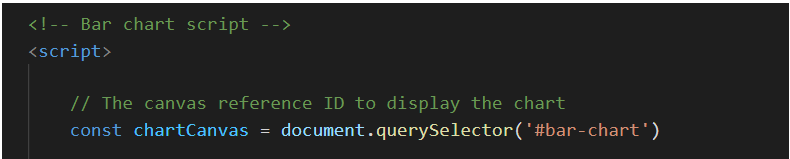
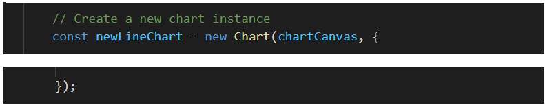
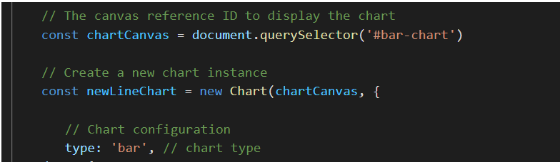
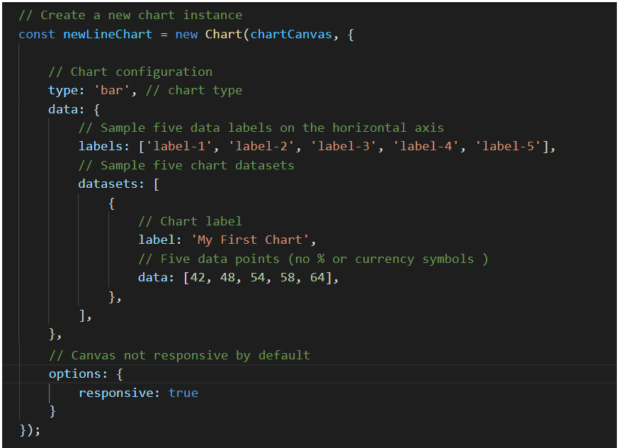
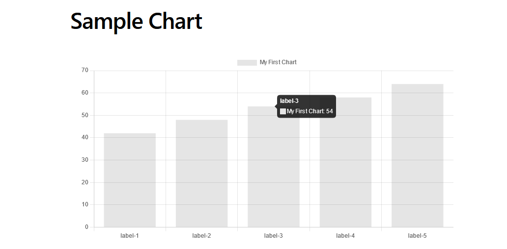
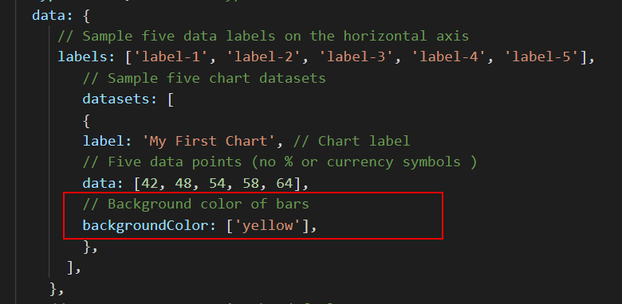
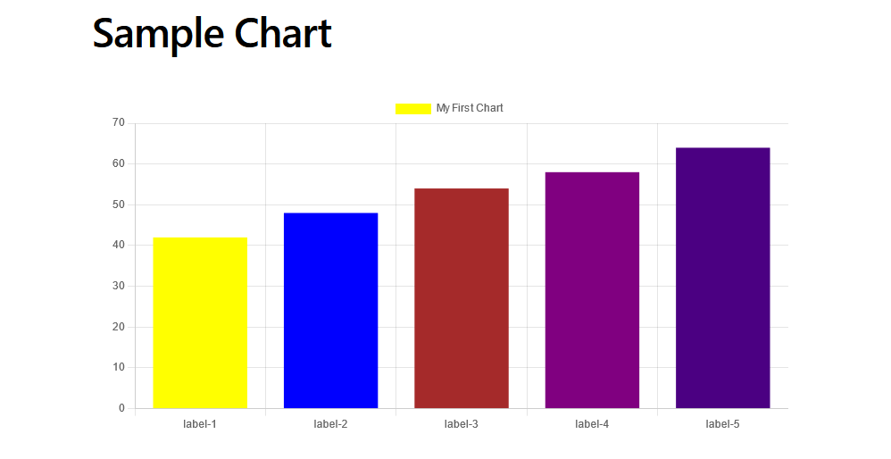
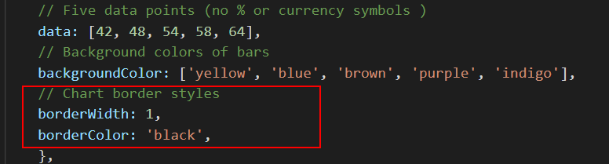
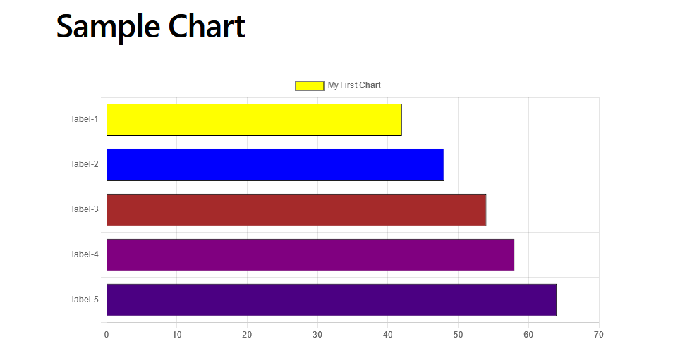

At the end of this Tutorial, you will be able to:
- Add and style a basic chart to a web page with the Chart.js JavaScript library.
Charts and web pages
A number of libraries of JavaScript code have been created to help front-end developers display numerical data in graphical format. Two of the most popular are:
- Google Charts: A powerful and free gallery of interactive charts and data tools.
- Chart.js: An open source, community-supported library that can create eight different chart types.
In this Tutorial you will use the second JavaScript library to create the following two chart types:
- Bar chart
- Horizontal bar chart
An overview of Chart.js
There are three main steps needed to create a Chart.js graph in a web page. Before creating some sample charts, let's look at each step:
- Canvas: The Charts.js library uses the HTML canvas element as a container for its charts.
- HTML: You need to link your web page to a CDN that hosts the Chart.js library. And create a <canvas> element in the page with a unique <canvas> to contain the chart.
- CSS: You need to create a parent element with a position: relative for the <canvas> element to ensure it displays responsively on different viewport sizes.
- JavaScript: Your JavaScript code will create a chart instance, specify the chart type, and set various configuration and styling options.
Chart.js and the canvas element
The HTML <canvas> element is used to draw graphics on a web page. Note that this element is only a container for graphics. You need to use JavaScript to actually draw the graphics.
A span <canvas> element is rectangular in shape and, by default, has no content and no border.
Chart.js and HTML
The simplest way to use the Chart.js library in a web page is by adding a link to a Content Delivery Network (CDN) near the bottom of the HTML file. See below.
<script src="https://cdnjs.cloudflare.com/ajax/libs/Chart.js/3.7.1/chart.min.js" integrity="sha512-QSkVNOCYLtj73J4hbmVoOV6KVZuMluZlioC+trLpewV8qMjsWqlIQvkn1KGX2StWvPMdWGBqim1xlC8krl1EKQ==" crossorigin="anonymous" referrerpolicy="no-referrer"></script>
You can see the full list of recommended Chart.js CDN links on the Cloudfare website. The latest version of Chart.js is 3.7.1.
You can also install Chart.js through npm, yarn, or any other package manager installer for the Node, React, Vue, Angular, or any other supporting frameworks.
Your next step is to create an HTML element with the <canvas> tag in the <body> of your HTML file that will contain your chart.
A very basic example is shown below.
<canvas id="myChart" width="1600" height="900"></canvas>
If you want to add several charts to the same page, ensure you give every one a unique id. You will use the id property to reference each chart in JavaScript and perhaps also CSS.
Also ensure you position the <canvas> element in your HTML file before the CDN link to the Chart.js JavaScript library.
Chart.js and CSS
To make your chart responsive so that it displays correctly on various viewport sizes, wrap your canvas in a parent HTML tag. See the example below.
<div class="container-chart"> <canvas id="myChart"></canvas> </div>
In the linked stylsheet file, the chart container div element will have style rules such as the following.
.container-chart {
position: relative;
width: 100%;
padding: 20px;
}
As you shall see in the JavaScript section below, the canvas tag is not responsive by default. So you will need to set the Chart.js configuration option named responsive to true. Your chart will then resize responsively by taking the width and height of its parent HTML div element.
Chart.js and JavaScript
Your JavaScript code will include the following:
- The canvas reference to display the chart on the web page. 
- The chart instance, which is needed to initiate each new chart. 
- The chart configuration which specifies the chart type. 
- The dataset labels, the datasets for the chart, the chart label (the chart title) and any further configuration options.  In the example above are five datasets with five labels, and a label for the chart as a whole.
Note that the array of data values includes only numbers and no currency (such as €), percentage (%) or other symbols.
To add any symbol to data in Chart.js, you need to define a callback function in the chart configuration options.
Next, let's create a very simple chart.
Creating a basic chart
Download and unzip this file:
Follow the steps below.
- In Visual Studio Code, open the following file: chart-basic.html This web page is linked to a basic stylesheet named charts.css and a CDN hosting the chart.js library.
- Within the main tag in the page, copy-and-paste the following.
<section> <h2>Sample Chart</h2> <div class="container-chart"> <canvas id="bar-chart"></canvas> </div> </section>This is the HTML container that will hold your chart. - After the closing </script> tag that loads the chart.js library, copy-and-paste the following JavaScript code.
<!-- Bar chart script --> <script> // The canvas reference ID to display the chart const chartCanvas = document.querySelector('#bar-chart') // Create a new chart instance const newLineChart = new Chart(chartCanvas, { // Chart configuration type: 'bar', // chart type data: { // Sample five data labels on the horizontal axis labels: ['label-1', 'label-2', 'label-3', 'label-4', 'label-5'], // Sample five chart datasets datasets: [ { label: 'My First Chart', // Chart label // Five data points (no % or currency symbols ) data: [42, 48, 54, 58, 64], }, ], }, // Canvas not responsive by default options: { responsive: true } }); </script>
- Save the chart-basic.html web page and view it in your web browser. It should look as showw below. 
If you hover over the chart with the mouse you can see it includes built-in tooltips.
Adding colours and borders to a chart
Let's add some colours to this simple chart. Here are the steps.
- In the chart JavaScript code, directly under the data array, copy and-paste the following.
// Chart data background color backgroundColor: ['yellow'],Your code should now look as follows.  - Save the chart-basic.html web page and view it in your web browser. All five vertical bars should now have a background colour of yellow.
- In VS Code, replace the single colour with the following.
// Chart data background colors backgroundColor: ['yellow', 'blue', 'brown', 'purple', 'indigo'] - Save the chart-basic.html web page. It should now look as follows. 
- Add some border styles as shown below. 
Converting to a horizontal bar chart
Finally, let's convert the bar chart to a horizontal bar chart. The newer versions of Chart.js do not have a separate chart type value for a horizontal bar chart.
Instead, you create a standard bar chart and add the following to the chart options. See below.
Update your chart-basic.html web page and view it in your web browser. It should now look as shown below.

Working with Chart Types
Using data from the following web page and the chart-types.html web page, create some sample bar, horizontal bar, line and pie charts.
Stack Overflow Developer Survey 2021